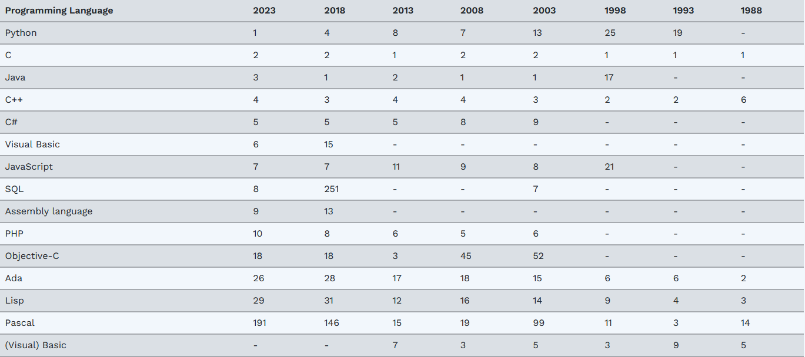

Les langages informatiques évoluent constamment. Chaque année de nouveaux langages informatiques apparaissent sur le marché au détriment d'autres qui deviennent obsolètes. Cependant, certains anciens langages sont toujours présents et même toujours très utilisés.
Dans ce travail, je me suis intéressé aux langages apparus antérieurement et jusqu'à l'apparition des premiers langages objet.

https://www.tiobe.com/tiobe-index/
Le tableau ci-dessus représente les langages informatiques les plus utilisés sur le long terme, on observe ici que le C et le C++ sont toujours en lice dans le classement. A noter que le C++ est le premier langage oop (oriented object programming) populaire et qu'il est toujours d'actualité. Le C a inspiré de nombreux langages plus récents (Java, Python, C#) qui utilisent des syntaxes similaires.
Généralement, il existe trois raisons différentes à l'utilisation d'un vieux langage informatique.
Actuellement, les langages de cette première catégorie sont toujours en activités, néanmoins, une infime partie de nouveaux projets font le choix de ces technologies. De plus, les développeurs adeptes des ces technologies sont veillissants, les nouveaux développeurs intéressés se font rares et sont parfois très recherchés (Cobol). Finalement, la plupart des autres vieux langages sont toujours d'actualité, bien que des nouvelles technologies font leurs preuves telles que Rust, Golang ou Swift.